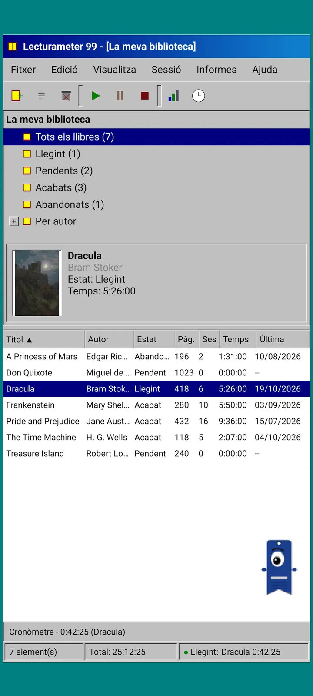
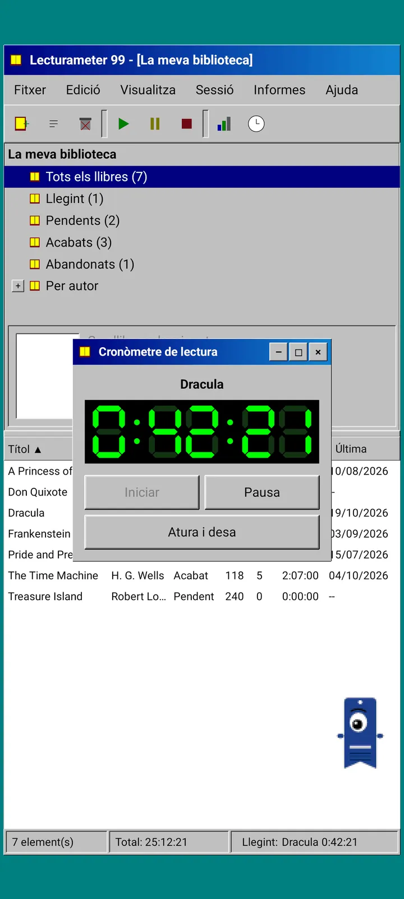
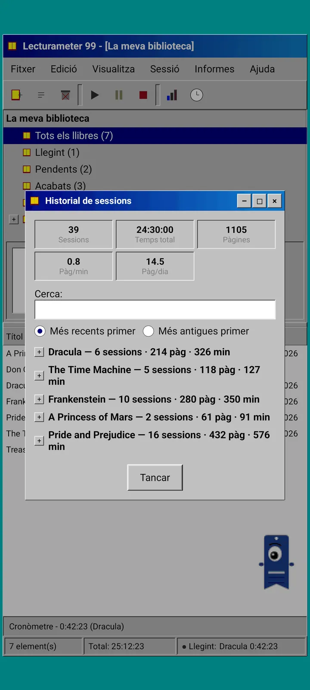
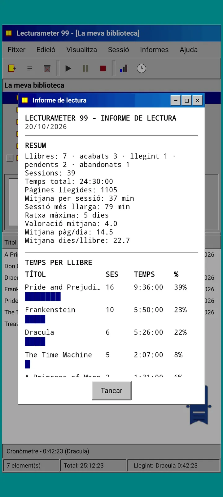
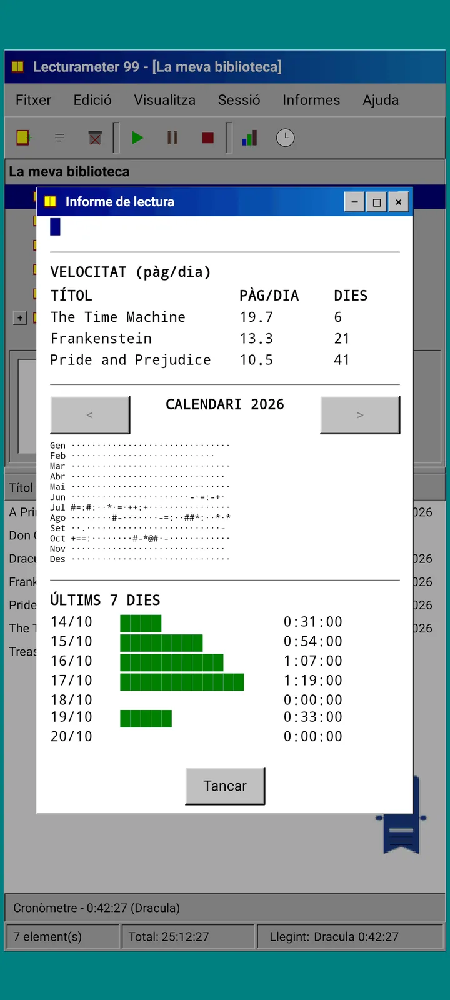

Blog · 2026-09-24
Lecturameter 99, abans Lecturameter 1999: com seria Lecturameter com a programa de PC antic?
Un client alternatiu de Lecturameter amb finestres, menús, taules i un cronòmetre LCD, que obre les teves còpies reals. Com va néixer, què té i què deixa fora a propòsit. Ja a l'App Store; Google Play, aviat.
Lecturameter 99 (abans Lecturameter 1999) s'ha anat coent uns quants mesos. L'he construït a trossos, aquí i allà, sense pressa i sense pla. No m'hi vaig posar seriosament fins que vaig veure que la versió d'iOS era més simple del que esperava i em deixava marge per acabar-la.
No és l'únic experiment. Hi ha altres projectes de l'univers Lecturameter al cap, alguns força avançats i d'altres que amb prou feines han començat. Probablement la majoria no veuran mai la llum.
D'on ve?
Tot va començar amb un experiment al qual feia temps que donava voltes.
La idea era reconstruir Lecturameter des de zero, diverses vegades, amb premisses de disseny radicalment diferents. Sense tocar l'aplicació real i sense intenció de substituir-la. Van sortir set versions. Una imitava una aplicació d'Android del 2016, una altra imaginava com seria el 2036, una altra convertia la biblioteca en una prestatgeria amb llomells que s'engreixen a mesura que llegeixes, una altra es va dissenyar per a una consola portàtil amb dues pantalles.
La que més em va agradar va ser la 1999. Un programa d'escriptori de finals dels noranta: dens, utilitari, tot en finestres, menús i taules. Vaig decidir acabar-la, a poc a poc, com a exercici divertit i convertir-la en un client complet, amb les dades reals de Lecturameter al darrere.
Què és?
Lecturameter 99 és una aplicació independent, separada de Lecturameter. Quan l'obres veus una única finestra maximitzada sobre un escriptori de color verd blavós. A dalt, la barra de títol i els menús: Fitxer, Edita, Visualitza, Sessió, Informes i Ajuda. A sota, una barra d'eines amb icones pixelades. La zona central està dividida en dues: un arbre amb la biblioteca i un tauler de previsualització amb la coberta, i una taula amb una fila per llibre. A baix, la barra d'estat amb el nombre d'elements, el temps total i el llibre que estàs llegint.


Les mateixes dades que Lecturameter
Aquesta és la part que converteix l'experiment en alguna cosa utilitzable. Sota la closca de 1999 hi ha el model de dades real de Lecturameter, copiat tal qual: els mateixos llibres, les mateixes sessions, els mateixos estats, valoracions i notes. La còpia de seguretat que exporta és el mateix fitxer que exporta Lecturameter, i el que també importa.
A la pràctica vol dir que pots anar a Fitxer, importar la teva còpia de seguretat i veure tota la biblioteca en una taula de 1999. Llegir una setmana amb el cronòmetre LCD. Exportar. Tornar a l'aplicació moderna amb les sessions noves i sense haver perdut ni un sol camp pel camí. El CSV de Goodreads també entra i surt.
La cerca de llibres és la mateixa que a Lecturameter: consulta el catàleg propi de l'aplicació i Google Books, i omple títol, autor, pàgines, ISBN i coberta. La coberta es posteritza i es dibuixa sense suavitzar perquè sembli un GIF de l'època.
Sessions, historial i informe
El flux de lectura és el de Lecturameter, traduït a finestres. Selecciones un llibre a la taula i prems el botó de reproduir. S'obre la finestra del cronòmetre, amb una pantalla de set segments en verd sobre negre. Pots moure-la, minimitzar-la a una barra de tasques o tancar-la: el temps continua comptant a la barra d'estat.
Quan prems aturar, s'obre el diàleg de desar sessió: data, minuts, primera i última pàgina (o percentatge), comentari. Pots registrar la sessió per pàgines, per percentatge o només per temps, i el resum calcula pàgines i ritme mentre escrius. Si arribes a l'última pàgina del llibre, pregunta si l'has acabat. Les sessions manuals s'afegeixen des del menú Sessió.
L'historial agrupa les sessions per llibre en un arbre amb més i menys, amb cinc xifres a dalt: sessions, temps total, pàgines, pàgines per minut i pàgines per dia. Toca dues vegades una sessió per editar-la, mantén-la premuda per eliminar-la.
Les estadístiques són un informe de lectura en text monoespaiat, com si sortís d'una impressora: un resum amb la ratxa més llarga i la valoració mitjana, el temps per llibre amb barres de blocs, la velocitat en pàgines per dia, un calendari de l'any dibuixat amb caràcters segons les pàgines llegides cada dia, i els darrers set dies.



Pagi 99
Pagi també viatja a 1999. És la mateixa silueta de punt de llibre d'un sol ull, però pixelada, i voltreja lliure per la pantalla com els ajudants d'oficina d'aquella època. L'arrossegues amb el dit, diu una frase curta quan la toques i canvia d'expressió segons el que fas: pensa mentre cerques un llibre, llegeix mentre corre el cronòmetre i celebra quan deses una sessió o acabes un llibre.
Els consells de l'aplicació apareixen en globus grocs ancorats a Pagi, una sola vegada cadascun. Si els vols repassar, són a Ajuda, a Consell del dia.


Què queda fora
Lecturameter 99 és més simple a propòsit. És un experiment i, en principi, no tindrà més desenvolupament. Les novetats continuaran arribant a Lecturameter.
Mentre el construïa vaig decidir que tot allò que no afectés el flux de lectura quedava fora. Per això Lecturameter 99 no té Pro. El que veus és el que obtens.
Està disponible en 50 idiomes.
On aconseguir-la
Ja és a l'App Store, gratis, per a iPhone. La versió d'Android arribarà més endavant a Google Play: encara no hi ha fitxa pública. Les botigues encara la poden mostrar amb el nom anterior, Lecturameter 1999. Quan surti a Google Play ho anunciaré aquí, a X i a Reddit.
Mentrestant, Lecturameter continua sent Lecturameter, amb els seus temes, els seus reptes i els seus bingos. L'edició 99 és una altra manera de mirar les mateixes dades.
Mentre esperes, Lecturameter a Android
Continua llegint: Lecturameter 99 · Temps de lectura o pàgines · Cronòmetre de lectura